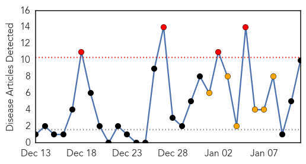
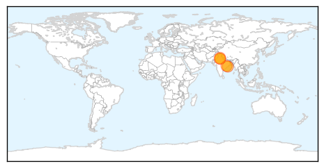

30 Day Trends
Web: 4 alerts, 6 warnings
Twitter: 0 alerts, 0 warnings
Top Articles:
- 1.000
- Sector 42 woman is Chandigarh’s first H1N1 patient
- 0.997
- Three new cases of swine flu in city, authorities on alert
- 0.996
- Alert in Fatehabad after patient’s death in Jind
- 0.996
- Odisha Government alerts medical institutions to be vigilant against swine flu, H1N1 virus, Odisha Current News, Odisha Latest Headlines
- 0.995
- Swine Flu Ward at SCB to Open in Two Days
- 0.991
- Eight swine flu cases detected in Haryana: Official
- 0.985
- 65-year-old tests positive for swine flu
- 0.975
- Man tests +ve for swine flu, state on alert
- 0.960
- Three new cases of swine flu in Delhi
- 0.908
- 3 New cases of swine flu in Delhi
Top Tweets:
-
No tweets found for Jan 11, 2015
Web/News Articles
Tweets

Article Locations
Article Confidences